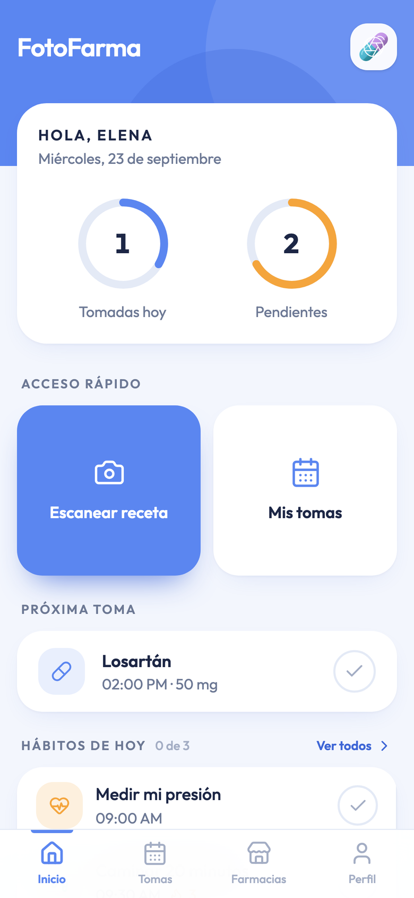
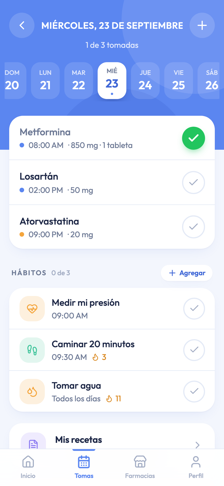
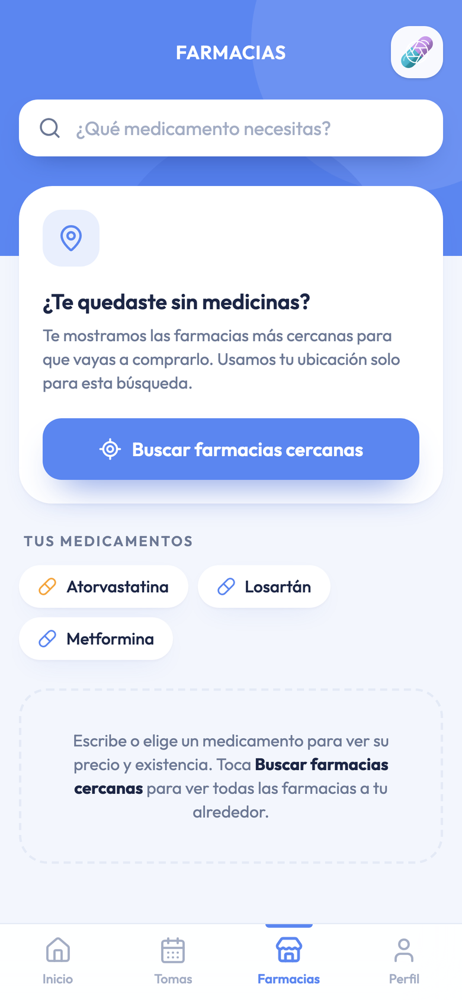
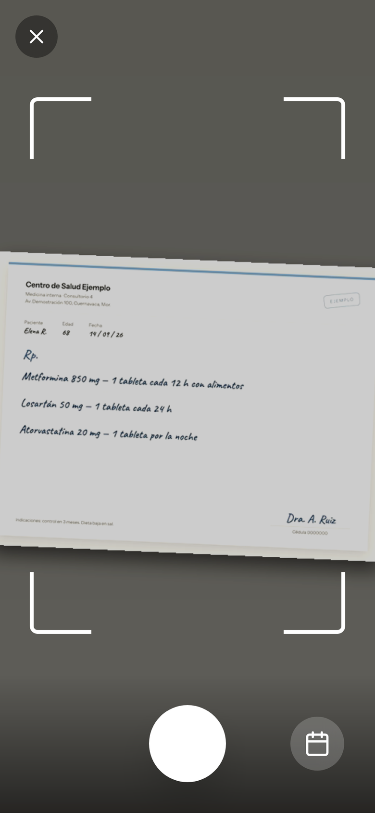
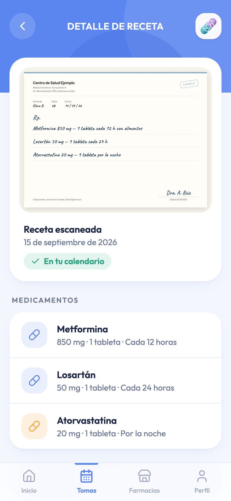
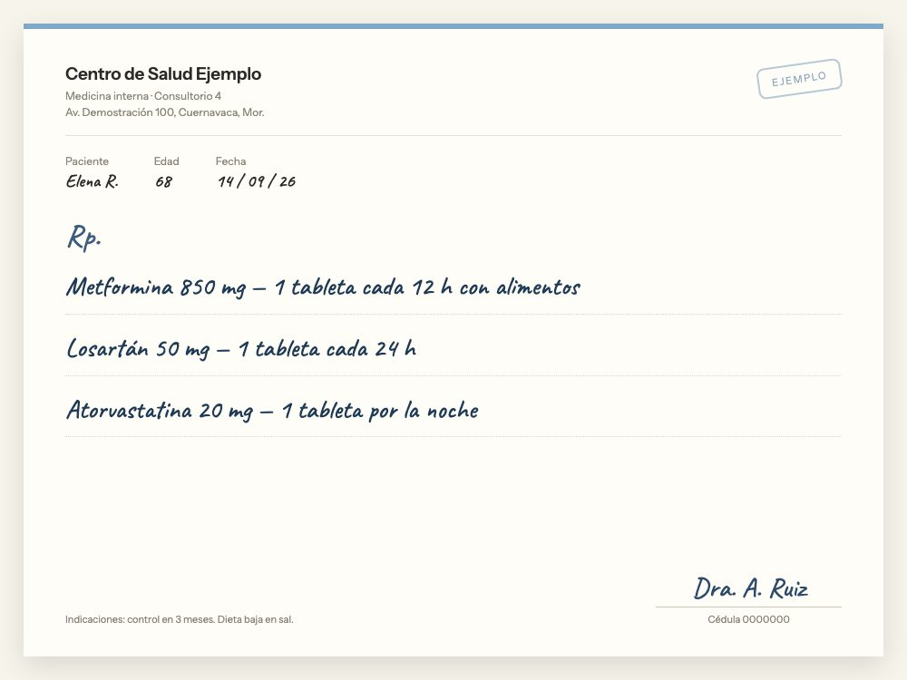
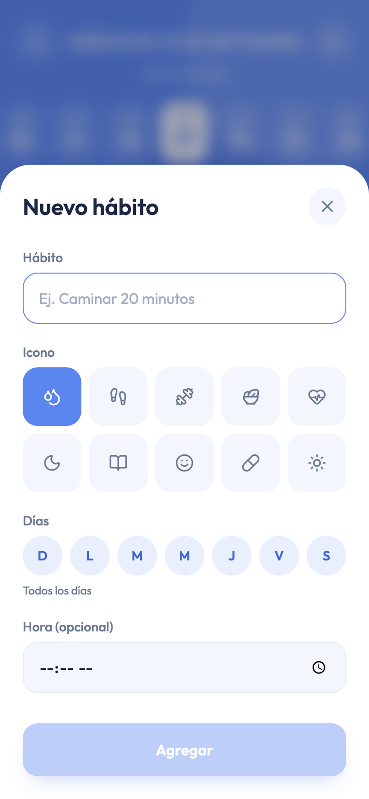
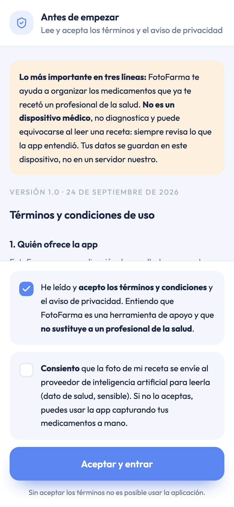

Adherencia al tratamiento · Hecho en México
Tus medicinas,
a su hora.
FotoFarma toma la foto de tu receta, la lee y arma solo el calendario de tus tomas, con recordatorios, hábitos y las farmacias más cercanas cuando se te acaba algo. Sin cuenta, sin servidores y sin costo.
Abrir la app Se abre en el navegador, sin instalar nada y sin crear cuenta. Funciona en celular, tablet y computadora.


No es una maqueta:
está en línea y funcionando.
Cualquiera puede abrirla ahora mismo, escanear una receta real y ver el calendario armado. Estos son los números del código que está publicado en este momento, no una promesa.
- Última versión24 de septiembre de 2026 · términos, aviso de privacidad y consentimiento obligatorio
- Código3,932 líneas entre la app, el almacenamiento local y el intermediario de farmacias
- Peso160.1 KB de JavaScript y 10.0 KB de CSS, comprimidos
- PantallasNueve: portada, inicio, cámara, revisión, calendario, recetas, detalle, farmacias y perfil
- DatosCuatro colecciones en el dispositivo: tomas, recetas, hábitos y ajustes
- Operación$0 de hospedaje. Lo único variable es leer recetas con IA
- PruebasChrome y Safari, en seis tamaños de pantalla, antes de cada publicación
Cerca de la mitad de los pacientes con una enfermedad crónica no toma su tratamiento como se lo indicaron.
Organización Mundial de la Salud, Adherence to long-term therapies (2003).
- La letra del médico se vuelve ilegible en cuanto pasa una semana.
- En adultos mayores la polifarmacia es la regla: tres o cuatro medicamentos con ritmos distintos.
- Quien cuida a otra persona administra tomas que no son suyas y no tiene dónde apuntarlas.
- Cuando se acaba el medicamento a media noche, nadie sabe qué farmacia cercana lo tiene.
El problema casi nunca es la voluntad: es la logística. Sales del consultorio con un papel escrito a mano, tres medicamentos con horarios distintos y una duración que nadie anotó. A los cuatro días ya no sabes si la de la noche te tocaba o no.
Un ejemplo real de lo que la app recibe: «Metformina 850 mg cada 12 h con alimentos, Losartán 50 mg cada 24 h, Atorvastatina 20 mg por la noche». Son tres renglones en una hoja. Traducidos a la semana son 28 tomas en cuatro horarios distintos que alguien tiene que recordar sin equivocarse, todos los días, durante tres meses.
Saltarse tomas no es una molestia menor: es tratamiento que no funciona, consultas repetidas, complicaciones evitables y medicina comprada que se queda en el buró. En México, 18% de los adultos vive con diabetes y solo 26% la tiene bajo control (ENSANUT 2023); entre quienes viven con hipertensión, 52% no aplicó ninguna medida de dieta o ejercicio para controlarla.
Las cifras completas, con su fuente y su año, están en la sección de números.
Datos duros, con fuente
y con fecha.
Todo lo que sostiene este proyecto sale de encuestas públicas mexicanas y de la Organización Mundial de la Salud. Aquí están las cifras completas, con el año y la fuente de cada una, para que cualquiera pueda comprobarlas.
| Indicador | Dato | Fuente y año |
|---|---|---|
| Personas que usaron teléfono celular (6 años y más) | 84.6%, 2.9 puntos más que en 2024 | INEGI, ENDUTIH 2025 |
| Personas que usaron internet | 86.1% · 104.9 millones | INEGI, ENDUTIH 2025 |
| Hogares con internet | 78.3%, el doble que hace una década (39.1%) | INEGI, ENDUTIH 2025 |
| Uso de internet: urbano contra rural | 88.9% y 75.2% | INEGI, ENDUTIH 2025 |
| Usuarios de celular con plan de prepago | 79.3% | INEGI, ENDUTIH 2025 |
| Adultos con diabetes | 18%; un tercio no conocía su diagnóstico | ENSANUT 2023, INSP |
| Adultos con diabetes bajo control | solo 26% | ENSANUT 2023, INSP |
| Adultos con diagnóstico previo de hipertensión | 15.9%; diabetes, 10.9% | ENSANUT 2022, INSP |
| Hipertensos sin medidas no farmacológicas | 52% no cambió dieta ni ejercicio | ENSANUT 2023, INSP |
| Adherencia en enfermedades crónicas | cerca del 50% no sigue el tratamiento | OMS, Adherence to long-term therapies, 2003 |
| Personas de 60 años o más | 15.1 millones | INEGI, Censo de Población 2020 |
El teléfono ya está en la mano
Con 84.6% de uso de celular y 86.1% de uso de internet, el canal existe incluso en el grupo que más medicamentos toma. No hace falta repartir dispositivos: hace falta que la herramienta quepa en el que ya traen.
Prepago manda
Casi ocho de cada diez usuarios de celular usan prepago. Por eso la app pesa 170 KB, guarda los datos en el dispositivo y funciona sin conexión salvo para escanear una receta.
El problema no es el diagnóstico
Con 18% de adultos con diabetes y solo 26% de ellos en control, el hueco no está en detectar la enfermedad, sino en sostener el tratamiento día tras día. Ahí entra FotoFarma.
Fuentes: Encuesta Nacional sobre Disponibilidad y Uso de Tecnologías de la Información en los Hogares (ENDUTIH) 2025, publicada por el INEGI el 16 de junio de 2026; Encuesta Nacional de Salud y Nutrición (ENSANUT) 2022 y 2023, del Instituto Nacional de Salud Pública; Censo de Población y Vivienda 2020 del INEGI; Organización Mundial de la Salud, Adherence to long-term therapies: evidence for action (2003).
De la receta al calendario,
en tres pasos.
No hay que escribir nada. La app hace el trabajo aburrido y te deja a ti la única parte que importa: revisar que lo que leyó coincida con lo que dijo tu médico.
Tomas la foto
Abres la cámara dentro de la app y encuadras la receta entre las cuatro guías. Sirve la de papel, la de la clínica o una que te mandaron por mensaje: también puedes elegir una imagen de tu galería.
Revisas lo que leímos
La app te muestra cada medicamento con su dosis, su frecuencia, su duración y las notas del médico. Corriges lo que haga falta y descartas lo que no sea tuyo. Sin tu confirmación no se guarda nada.
Palomeas cada toma
El calendario queda armado hasta el último día del tratamiento. A la hora exacta suena la alarma y aparece en pantalla; tú solo palomeas lo que ya te tomaste y el anillo del inicio se llena.


Una receta, de principio a fin.
Esta es la ruta completa dentro de la app: la foto, lo que devuelve la inteligencia artificial, cómo se convierte en horarios, qué revisa la persona y qué queda guardado. La receta de ejemplo trae tres medicamentos crónicos, la combinación más común en México.
Lo que entra
Una hoja con letra manuscrita, tres renglones y una indicación al pie. Ninguna estructura, ningún formato estándar: así son las recetas de verdad. La app no pide que se vea bonita, solo que se alcance a leer.
- PacienteMujer de 68 años, tres medicamentos crónicos
- RenglonesTres, a mano, con dosis y frecuencia mezcladas
- Al pieControl en tres meses, dieta baja en sal
- Lo que faltaA qué hora tomar cada cosa: eso es lo que hay que calcular

Lo que devuelve la IA
Datos con forma, no un texto que haya que interpretar.
La app le pide al modelo que responda siguiendo un esquema exacto, con cinco campos por medicamento, y descarta lo que no lo cumpla. La respuesta llega en pedazos, conforme el modelo la escribe, y la app la va juntando.
[
{ "name": "Metformina", "dosage": "850 mg · 1 tableta",
"frequency": "Cada 12 horas", "duration": "Indefinido",
"comments": "Tomar con alimentos" },
{ "name": "Losartán", "dosage": "50 mg · 1 tableta",
"frequency": "Cada 24 horas", "duration": "Indefinido",
"comments": "" },
{ "name": "Atorvastatina", "dosage": "20 mg · 1 tableta",
"frequency": "Por la noche", "duration": "Indefinido",
"comments": "Dieta baja en sal" }
]
Respuesta del modelo para la receta de ejemplo. Cinco campos por medicamento, siempre los mismos.
La parte que nadie ve
De «cada 12 horas» a una hora en el reloj.
Aquí está el trabajo que el papel le deja al paciente. La app lo resuelve con una regla simple y predecible: toma la hora en que empieza tu día —la que pusiste en tu perfil— y reparte las tomas a partir de ahí.
| Lo que dice la receta | Tomas al día | Horarios que arma |
|---|---|---|
| Dosis única | 1 | 08:00 |
| Cada 24 horas · diario · una vez al día | 1 | 08:00 |
| Cada 12 horas · dos veces al día | 2 | 08:00 · 20:00 |
| Cada 8 horas · tres veces al día | 3 | 08:00 · 16:00 · 00:00 |
| Cada 6 horas · cuatro veces al día | 4 | 08:00 · 14:00 · 20:00 · 02:00 |
| Cada 4 horas · seis veces al día | 6 | 08:00 · 12:00 · 16:00 · 20:00 · 00:00 · 04:00 |
La semana que resulta
Cuatro tomas al día,
84 en tres meses.
Con los tres medicamentos de la receta de ejemplo el calendario queda así, hasta la siguiente consulta. La hora de la atorvastatina es la única que la persona ajusta a mano en la revisión: «por la noche» no es una frecuencia que se pueda calcular sola, así que la app propone un horario y deja que se corrija.
| Hora | Medicamento | Nota |
|---|---|---|
| 08:00 | Metformina 850 mg | Con alimentos |
| 08:00 | Losartán 50 mg | — |
| 20:00 | Metformina 850 mg | Con alimentos |
| 21:00 | Atorvastatina 20 mg | Ajustada a mano |
La segunda pasada
Revisión de seguridad.
Antes de guardar, la app hace una consulta distinta: compara los medicamentos nuevos contra los que ya tenías dados de alta y pide cuatro cosas concretas.
- Interacciones peligrosas entre lo nuevo y lo que ya tomas.
- Dosis potencialmente altas o frecuencias inusuales.
- Consejos de seguridad: con alimentos, sin alcohol, separado de otro medicamento.
- Un puntaje de seguridad del 0 al 100 que resume el resultado.
Cada interacción se clasifica en riesgo bajo, medio o alto, con los dos medicamentos involucrados y una explicación en español llano.
{
"safetyScore": 86,
"warnings": ["Vigilar función renal"],
"interactions": [
{ "medA": "Metformina",
"medB": "Losartán",
"risk": "low",
"description": "…" }
],
"recommendations": ["Tomar con alimentos"]
}
Forma de la respuesta de la auditoría. El contenido depende de cada receta y de tu historial.
El paso que nunca se salta
La revisión humana.
Hasta aquí no se ha guardado nada. La pantalla de revisión muestra la lista completa y permite cambiarlo todo antes de que exista una sola toma en el calendario.
Corregir
Nombre, dosis, frecuencia, duración y notas: cada campo se edita si la IA lo leyó distinto de lo que dijo el médico.
Descartar
Un medicamento que no era tuyo, que ya terminaste o que el modelo inventó se elimina de la lista antes de guardar.
Confirmar
Solo entonces se crean las tomas, se guarda la foto y la receta aparece en tu historial.
| Situación | Qué hace la app |
|---|---|
| La foto salió movida | Devuelve menos medicamentos o campos vacíos; se corrigen en la revisión o se repite la foto sin perder nada. |
| No hay internet | Avisa que no pudo leer la receta. No guarda una receta incompleta ni inventa horarios. |
| La IA no responde | Muestra el error y deja la foto lista para reintentar. |
| Un medicamento que ya tomabas | La auditoría lo marca como duplicado potencial antes de guardar. |
| El teléfono se quedó sin espacio | Libera primero las fotos de recetas viejas y conserva las tomas y los datos del tratamiento. |
| Se cierra la app a media revisión | Nada se guardó: la receta no existe todavía y se vuelve a empezar desde la foto. |
Todo lo que hace la app.
Contadas con el detalle con el que se construyeron: qué hace cada una, cómo se comporta, qué pasa cuando algo sale mal y qué decidimos no hacer.
01 · Lectura de recetas
La receta se lee sola.
Tomas la foto y el modelo devuelve la lista de medicamentos en campos estructurados. Con esos campos la app arma el calendario. Después hace una segunda pasada distinta: compara lo nuevo contra lo que ya tenías y busca interacciones conocidas.
Lo que extrae de cada medicamento
- Nombre — comercial o genérico, tal como aparece escrito.
- Dosis — «850 mg», «1 tableta», «5 ml».
- Frecuencia — «cada 8 horas», «cada 24 horas», «dosis única».
- Duración — «7 días», «un mes», «indefinido».
- Comentarios — las indicaciones que no caben en los otros campos.
Lo que no hace
- No decide dosis ni sugiere cambiar un tratamiento.
- No guarda nada sin que confirmes la lista.
- No sustituye la revisión de un farmacéutico: busca casos conocidos.
02 · Tomas y recordatorios
Un día a la vez.
El calendario no es una agenda con meses: es la lista de hoy, para palomear. Arriba, una tira de treinta y un días —quince atrás y quince adelante—; el día elegido se queda centrado solo.
Cómo se comporta
- Encabezado con avance. «1 de 3 tomadas», con la fecha escrita completa.
- Orden por hora, con la dosis al lado y un color fijo por medicamento.
- Alta manual. El botón «+» abre una hoja con nombre, dosis y hora, sin pasar por la cámara.
- Edición. Tocar el nombre abre la misma hoja para corregir o eliminar.
Los avisos
- Revisión cada diez segundos mientras la app está abierta.
- Notificación del sistema con el nombre y la dosis, generada por tu teléfono.
- Alarma en pantalla con sonido, que se queda hasta que confirmas o la detienes.
- Permiso opcional: sin él la app funciona igual, solo deja de avisar.
- Fecha y avance del día elegido.
- Tira de días; un punto marca hoy.
- Tomas con hora, dosis y color propio.
- Palomita, verde cuando ya te la tomaste.
- Hábitos del mismo día, con su avance.
- Mis recetas: el historial vive aquí adentro.
03 · Hábitos
Lo que no viene en la receta.
Un tratamiento casi nunca es solo la pastilla. Los hábitos se palomean junto a las medicinas, con el mismo gesto, y llevan la cuenta de los días seguidos.
Sugerencias según la edad
- Hasta 12 años. Tomar agua, jugar al aire libre, lavarse los dientes, dormir nueve horas.
- De 13 a 17. Tomar agua, moverse sesenta minutos, desayunar, dormir ocho horas.
- De 18 a 59. Tomar agua, caminar veinte minutos, comer verduras, dormir siete horas.
- 60 o más. Medir la presión, caminar veinte minutos, tomar agua, revisar el pastillero.
Cómo se define y cómo se mide
- Nombre libre e icono entre diez.
- Días: todos, entre semana, fines de semana o los que elijas.
- Hora opcional; sin ella el hábito dice «Todos los días».
- Racha de días seguidos, saltándose los días en que no tocaba.
- El día en curso no rompe la racha mientras no termine.

04 · Farmacias
Cuando se te acaba a media noche.
Con tu ubicación, la app busca las farmacias a tu alrededor en OpenStreetMap —el mapa abierto que también incluye las de barrio— y las ordena por distancia real, calculada sobre la curvatura de la Tierra.
De cada farmacia te dice
- Distancia redondeada: «280 m» o «1.4 km».
- Horario traducido al español, incluido «Abierta 24 horas».
- Dirección con calle y número cuando el mapa los tiene, y teléfono si está registrado.
- Cómo llegar, que abre la ruta en Google Maps.
Precio y existencia por cadena
- Farmacias del Ahorro — consulta en línea directa: precio y disponibilidad. Funcionando.
- Similares y Benavides — necesitan el intermediario propio. En camino.
- Guadalajara y San Pablo — bloquean consultas automáticas; solo ubicación.
- No vende nada: no aparta producto ni cobra comisión, y sugiere llamar antes de ir.
- Buscador por nombre de medicamento.
- Buscar cercanas: pide la ubicación solo al tocarlo.
- Tus medicamentos como atajos, tomados del calendario.
- Explicación de cada camino, en vez de una pantalla vacía.
05 · Tus recetas
El historial que el papel nunca tuvo.
Detalles
- Cada receta se guarda con su foto, su fecha y sus medicamentos.
- La galería las ordena de la más reciente a la más vieja.
- Etiqueta verde de «En tu calendario» mientras sus tomas siguen activas.
- Borrar una receta borra sus tomas, y la app lo advierte antes.
- Si falta espacio, libera primero las fotos viejas y conserva los tratamientos.
06 · Perfil
Tú decides todo.
Qué puedes cambiar
- Tu nombre, solo para el saludo; puede quedarse vacío.
- Tu edad, de la que dependen las sugerencias de hábitos.
- La hora en que empieza tu día, base de todos los horarios.
- Notificaciones, con una alarma de prueba para oír cómo suena.
- Instalar la app en la pantalla de inicio.
- Borrar mis datos: recetas, tomas y hábitos, sin copias.
Hecha para el teléfono
que la gente ya trae.
El usuario que más lo necesita tiene 68 años, un teléfono de gama media y un plan de datos corto. Todas las decisiones de la interfaz salen de ahí.
| Pantalla | Para qué sirve | Cómo se llega |
|---|---|---|
| Portada | Explica en tres líneas qué hace la app. Se ve una sola vez. | Primera apertura |
| Inicio | Anillos del día, accesos rápidos, próxima toma y hábitos. | Pestaña 1 |
| Cámara | Encuadrar y disparar la foto, o elegirla de la galería. | Botón «Escanear receta» |
| Revisión | Lo que la IA entendió, editable, con la auditoría de interacciones. | Después de la foto |
| Calendario | Tomas y hábitos del día elegido, para palomear. | Pestaña 2 |
| Mis recetas | Galería de recetas escaneadas. | Dentro del calendario |
| Detalle de receta | Foto original y medicamentos de esa receta. | Desde la galería |
| Farmacias | Farmacias cercanas, precio y existencia. | Pestaña 3 |
| Perfil | Ajustes, avisos, instalación, aviso legal y borrado. | Pestaña 4 |
- Área de toqueLas palomitas miden entre 40 y 52 píxeles, por encima del mínimo recomendado de 44.
- Tamaño de letraFluida con la pantalla: los nombres de medicamento nunca bajan de 17 píxeles.
- ContrasteTinta azul marino sobre blanco; el texto secundario también pasa el mínimo.
- Respuesta al toqueTodos los botones se hunden un poco al presionarlos.
- Pantallas grandesEn iPad y computadora la app usa todo el ancho: las listas se vuelven rejilla.
- MovimientoSi el sistema pide menos animación, las transiciones se apagan.
- Sin conexiónCalendario, tomas y hábitos funcionan igual.
- InstalaciónDos toques desde el navegador, con icono propio y pantalla de bienvenida.
Cómo está construida
por dentro.
La arquitectura no es un detalle técnico: es lo que permite que la app sea gratuita, privada y que funcione en un teléfono modesto. Estas son las decisiones y sus consecuencias.
| Decisión técnica | Consecuencia |
|---|---|
| Sitio estático en GitHub Pages | Hospedaje sin costo y sin límite práctico de usuarios simultáneos. |
| Datos en el dispositivo, sin base de datos propia | Sin costo por usuario, sin superficie de fuga de datos de salud y sin obligaciones de custodia. |
| IA por receta, no por usuario | El costo variable crece con el uso real, no con las descargas. |
| Aplicación web progresiva | Se actualiza el mismo día; no depende de la revisión de dos tiendas. |
| Almacenamiento con forma de Firestore | El respaldo en la nube se puede activar después sin reescribir la app. |
Modelo de datos
Cuatro colecciones, todas en el teléfono.
| Colección | Campos | Qué guarda |
|---|---|---|
| tomas | nombre, dosis, frecuencia, duración, hora, fecha, completada, receta | Una fila por toma programada; es lo que se paloma cada día. |
| recetas | foto, fecha de escaneo, medicamentos | La imagen original y lo que la IA entendió. |
| hábitos | nombre, icono, días, hora, días cumplidos | Las rutinas y su historial de palomeo, del que sale la racha. |
| ajustes | nombre, edad, hora de inicio del día, aviso aceptado | Lo único que la app sabe de la persona. |
Todo se serializa bajo una sola clave del almacenamiento del navegador. Cuando el espacio se agota, la app libera las fotos de recetas más antiguas antes que cualquier otro dato.
Inteligencia artificial
- ModeloGemini Flash, llamado directo desde el navegador
- ModoRespuesta en streaming, que se va juntando conforme llega
- SalidaJSON con esquema fijo de cinco campos por medicamento
- Segunda llamadaAuditoría de interacciones con puntaje de 0 a 100
- CostoMenos de $0.05 por receta leída
- Si fallaError visible y foto lista para reintentar; nunca datos inventados
Farmacias
- MapaOpenStreetMap vía Overpass, con tres espejos de respaldo
- ConsultaFarmacias en un radio alrededor de ti, hasta 60 resultados
- DistanciaFórmula del semiverseno sobre el radio de la Tierra
- HorariosTraducidos del formato del mapa al español
- PreciosCatálogo en línea de Farmacias del Ahorro
- En caminoSimilares y Benavides, a través de un intermediario propio
Avisos
Mientras la app está abierta, revisa cada diez segundos si toca una toma. Lanza la notificación del sistema y una alarma en pantalla con sonido que no se quita sola.
Pruebas
Antes de cada publicación se prueba con un navegador automatizado en Chrome y Safari, en seis tamaños —computadora, laptop, iPad en dos orientaciones y celular en dos—, revisando que no haya errores ni desbordes.
Publicación
Cada cambio subido al repositorio se compila y se publica solo, en menos de un minuto. El código es abierto y cualquiera puede revisar qué hace la app con los datos.
Honestidad técnica
Lo que todavía no resuelve.
- No hay respaldo. Si cambias de teléfono o borras los datos del navegador, la información no te sigue.
- Un dispositivo, una persona. Todavía no hay perfiles de cuidador con varios pacientes.
- Los avisos dependen del teléfono. Con la app cerrada, iOS limita las notificaciones de una app web.
- La lectura necesita internet. Sin señal no se puede escanear una receta nueva.
- Dos cadenas bloquean sus catálogos: ahí solo se muestra la ubicación.
- La llave de la IA viaja en la app. Por eso se usa una llave sin facturación, limitada a la capa gratuita.
Tus datos no viven
en nuestro servidor.
Porque no hay servidor. FotoFarma corre entera en tu teléfono: las recetas, las tomas y los hábitos se guardan en el almacenamiento del navegador de tu dispositivo.
- Sin cuenta. No pedimos correo, teléfono ni contraseña. No hay perfiles que vender.
- Sin base de datos nuestra. Nadie —nosotros incluidos— puede ver tus tomas.
- La ubicación se pide solo cuando tocas «buscar farmacias» y no se guarda.
- La foto de la receta sí sale del teléfono en un caso: se envía al servicio de IA que la lee, y solo en ese momento. Ese envío necesita tu consentimiento expreso, en una casilla aparte.
- Borrar es borrar. Un botón en Perfil elimina recetas, tomas y hábitos de este dispositivo, sin copias.
- Código abierto: cualquiera puede revisar qué hace la app con la información.
| Permiso | Cuándo se pide | Qué se hace con él |
|---|---|---|
| Cámara | Al tocar «Escanear receta». | Tomar la foto. Se queda en tu dispositivo y se envía únicamente al servicio que la lee. |
| Ubicación | Al tocar «Buscar farmacias cercanas». | Calcular qué farmacias tienes cerca. No se guarda ni se comparte. |
| Notificaciones | Cuando decides activar los avisos. | Recordarte cada toma. Los avisos los genera tu propio teléfono. |
| Almacenamiento | Desde el primer uso. | Guardar recetas, tomas y hábitos. Es lo que permite funcionar sin cuenta. |
Antes del primer uso
Términos que de verdad hay que aceptar.
La app no deja pasar sin leer y aceptar los términos y el aviso de privacidad. Guarda la versión y la fecha de tu aceptación, y si el documento cambia de forma relevante, los vuelve a pedir. El consentimiento para mandar la receta a la inteligencia artificial va en una casilla separada y opcional: sin ella la app funciona capturando los medicamentos a mano.

Honestidad
Lo que FotoFarma no es.
Preferimos decirlo en la página principal y no escondido en unos términos que nadie lee.
- No es un dispositivo médico ni sustituye a tu médico o a tu farmacéutico.
- No diagnostica ni receta. Solo organiza lo que ya te indicaron.
- La IA se equivoca. Puede confundir una dosis o un nombre parecido; por eso la revisión antes de guardar es obligatoria.
- La revisión de interacciones busca casos conocidos y no cubre todos los posibles.
- Precios y existencias son informativos y cambian sin aviso: conviene llamar antes de ir.
Lo que todos preguntan.
Para empezar
¿Tengo que crear una cuenta?
No. Abres la app y ya está. No hay registro, ni correo, ni contraseña: los datos se guardan en tu propio teléfono.
¿Cuánto cuesta?
Nada. Las funciones que ayudan a no saltarse una toma son gratuitas y seguirán siéndolo. Lo que se cobrará en el futuro son extras como el respaldo en la nube y los reportes para el médico.
¿Cómo la instalo en mi teléfono?
Abre el enlace en el navegador. En iPhone toca compartir y luego «Agregar a inicio»; en Android el navegador lo ofrece solo o lo encuentras en el menú. Queda con su icono, como cualquier otra app.
¿Está en la App Store o en Google Play?
Todavía no. Se instala directo desde el navegador en dos toques, lo que permite actualizarla el mismo día que se corrige algo. Publicarla en las tiendas está en la hoja de ruta.
Sobre el uso
¿Qué pasa si la IA lee mal mi receta?
Por eso la app te muestra lo que entendió antes de guardar nada y te deja corregir cada campo. Si algo no coincide con lo que dijo tu médico, tú mandas. La app repite en todo momento que es una herramienta de apoyo, no un dispositivo médico.
¿Funciona sin internet?
Una vez abierta, el calendario, las tomas y los hábitos funcionan sin conexión, porque viven en tu dispositivo. Necesitas internet para dos cosas: leer una receta nueva con IA y buscar farmacias.
¿Puedo agregar una medicina sin receta?
Sí. En el calendario hay un botón para dar de alta una toma a mano, con su nombre, su dosis y su hora. Sirve para lo que ya tomabas antes de instalar la app.
¿Qué pasa si se me pasa una toma?
La alarma se queda en pantalla hasta que la atiendes, y la toma sigue marcada como pendiente en el día. La app no regaña ni borra el pendiente: lo deja visible para que lo resuelvas con tu médico si hace falta.
¿Sirve para cuidar a alguien más?
Hoy está pensada para una persona por dispositivo, y muchas familias la usan en el teléfono de quien cuida. Los perfiles de cuidador, con varios pacientes y aviso a un familiar, son la siguiente función en la lista.
¿Cómo calcula los horarios?
A partir de la hora en que empieza tu día, que pones en tu perfil. Si esa hora son las 8:00, «cada 8 horas» se convierte en 08:00, 16:00 y 00:00. Cambiando ese ajuste se recalculan todos los horarios.
Datos y farmacias
¿A dónde van mis datos?
A ningún lado: se quedan en el almacenamiento del navegador de tu dispositivo. Lo único que sale es la foto de la receta, en el momento en que se envía al servicio de IA que la lee.
¿Qué pasa si cambio de teléfono?
Por ahora la información no te sigue, porque vive solo en el dispositivo. El respaldo opcional y cifrado es lo primero de la hoja de ruta.
¿De dónde salen las farmacias y los precios?
Las farmacias vienen de OpenStreetMap, un mapa abierto que incluye tanto cadenas como farmacias de barrio. Los precios y existencias se consultan en el catálogo público en línea de la cadena; son informativos y pueden cambiar.
¿La app vende medicamentos?
No. No vende, no aparta y no cobra comisión por una compra. Te dice qué farmacias tienes cerca y te sugiere llamar antes de ir.
¿Quién está detrás?
Un equipo mexicano que construyó la app completa —producto, diseño y desarrollo— y la mantiene con código abierto. El detalle está en el plan de negocios.
Qué se construyó
y en qué orden.
El historial real del proyecto, tomado del repositorio. Sirve para ver el ritmo: la app pasó de una idea con inicio de sesión a una herramienta sin cuentas, con IA propia y buscador de farmacias, en cuestión de meses.
-
Abril 2026
Los cimientos
Primera versión con lectura de recetas por IA, alarma de medicamentos, notificaciones y la app instalable en la pantalla de inicio.
-
Mayo 2026
Seguridad y ajustes
Se agrega la auditoría de interacciones entre medicamentos, se mejora la gestión de ajustes del usuario y el primer recorrido de bienvenida.
-
18 de septiembre
El giro: fuera las cuentas
El día más largo del proyecto. Se quita el inicio de sesión, los datos pasan a vivir en el dispositivo y la app se rediseña por completo.
- Publicación automática en GitHub Pages con cada cambio.
- Diseño nuevo a partir de bocetos: banda de color, anillos de progreso y perfil.
- Cuatro pestañas: Inicio, Tomas, Farmacias y Perfil.
- Buscador de farmacias con precio y existencia por cadena.
- Arreglo de la pantalla en blanco en iPhone y pantalla de bienvenida al abrir.
-
19 de septiembre
La IA, directo desde el teléfono
La lectura de recetas deja de depender de un servidor intermedio y se hace desde el navegador en modo streaming. La banda azul gana movimiento.
-
22 de septiembre
Hábitos y marca
Último cambio publicado: el apartado de hábitos dentro del calendario, con sugerencias distintas según la edad, racha de días seguidos y resumen en la pantalla de inicio. Y un logo nuevo: cápsula y obturador.
-
24 de septiembre
Términos, privacidad y consentimiento
La app pide aceptar los términos y el aviso de privacidad antes del primer uso, con una casilla aparte para consentir el envío de la receta a la inteligencia artificial, que es un dato de salud. Se guarda la versión aceptada y su fecha.
-
Siguiente
Lo que viene
Respaldo cifrado opcional y perfiles de cuidador; después, reporte en PDF para el médico y panel de adherencia para clínicas. El calendario completo está en el plan de negocios.
Plan de negocios
El producto es la mitad;
aquí está la otra.
Mercado, modelo de ingresos, costos unitarios, competencia, proyección a tres años, métricas, riesgos y hoja de ruta. Dieciséis secciones con los supuestos a la vista para que cualquiera pueda discutirlos.
- Gratis siempre lo que salva tratamientos: escanear, recordar y palomear.
- FotoFarma Plus para quien quiere respaldo, historial y reportes para el médico.
- Licencias para clínicas, asilos y programas de salud que necesitan ver adherencia.
- Alianzas con farmacias por surtido, nunca por venta de datos personales.
Ábrela con la receta que traes hoy.
No hay que instalar nada para probarla: abre el enlace, toma una foto y mira cómo queda tu semana.